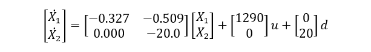
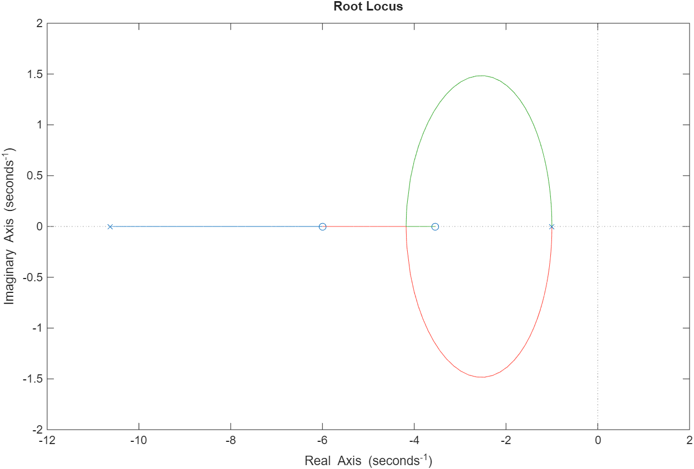
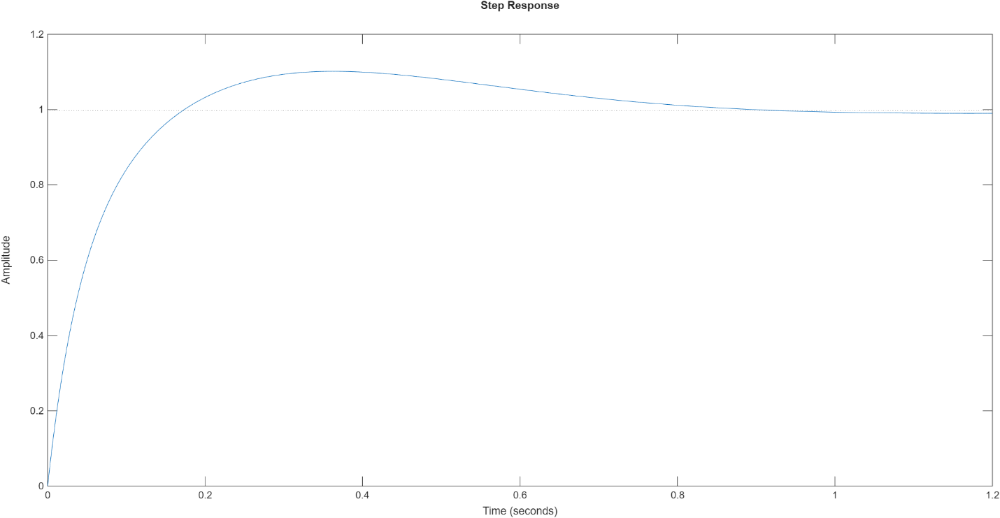
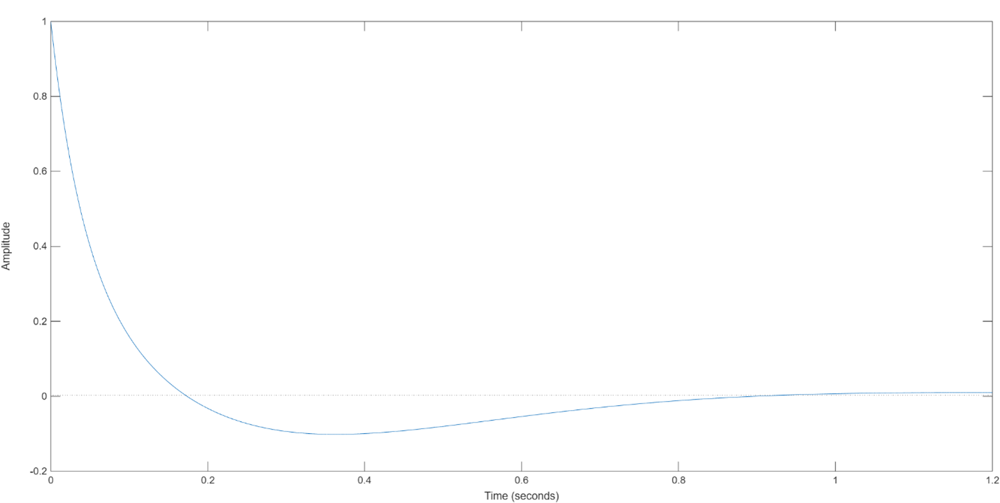

Engine Spool Speed Control with Disturbance Rejection.
A Frequency Domain Control Design Study.
Problem Statement
Goal of this controller is to design a control for engine spool. The primary goal of the control is disturbance rejection by minimizing the effect of variation in inlet flow on the spool speed while also maintaining reference tracking and stability.
Approach
- Started with the nonlinear rotational dynamics of the engine spool and the associated airflow dynamics.
- Linearized the nonlinear equations about a nominal equilibrium operating point and converted the resulting model into state-space form.
- Tuned controller parameter iteratively in the SISO tool to achieve desired performance requirements by achieving phase margin of ≥ 45°, settling time < 2 s, and overshoot < 10% 
- Converted the linearized model into a transfer function representation suitable for frequency-domain analysis.
- Converted the linearized model into a transfer function representation suitable for frequency-domain analysis.
- Tracking error < 1%.
- Phase margin ≥ 45°.
- Gain margin ≥ 6 dB.
- Disturbance rejection ≥ 95%.
- Closed-loop bandwidth > 1.5 rad/s.
- Designed a frequency-domain controller in MATLAB to meet the specified stability and performance requirements.
- Analyzed the closed-loop system in MATLAB using simulation plots, including step response, disturbance response, and Bode plots, to validate controller performance.
Results
Stability Analysis
-
Root Locus:
Root locus of the compensated open-loop system showing that all closed-loop poles remain in the left-half plane. The controller shifts dominant poles further left, improving transient response and ensuring stable operation with good damping across the operating gain range.

-
Bode Plot:
Frequency-domain analysis of the open-loop system with the designed controller, simulated in MATLAB. Shows a phase margin of 87.2° and infinite gain margin at a crossover frequency of 9.51 rad/s, confirming excellent robustness and stability. The system also satisfies the performance criterion of bandwidth > 1.5 rad/s.
-
Nyquist Diagram:
Nyquist plot of the open-loop system with the designed controller. The curve does not encircle the critical point (–1, 0), confirming closed-loop stability.


Performance Analysis
-
Step Response to Reference Input:
Step response of the closed-loop spool speed, settling to the reference value of 1 at 0.8 s, confirming accurate reference tracking with zero steady-state error.

-
Disturbance Rejection:
Disturbance rejection response of the closed-loop spool speed to a step change of 1 in inlet flow, simulated in MATLAB. The output returns exactly to 0 at steady state, corresponding to 100% disturbance rejection, demonstrating that the controller perfectly maintains the desired spool speed under perturbations.

Learnings
- Learned how to select system equations and define the appropriate inputs and outputs to achieve the desired control objectives.
- Gained experience in linearizing nonlinear system dynamics around an operating point for control design.
- Learned how to define performance criteria, such as tracking accuracy, disturbance rejection, and stability margins, to meet control goals.
- Gained hands-on experience in designing a feedback controller in frequency domain to satisfy the defined performance requirements.
- Learned how to simulate the designed controller in MATLAB to quantitatively analyze and validate system performance.
Tools Used : MATLAB